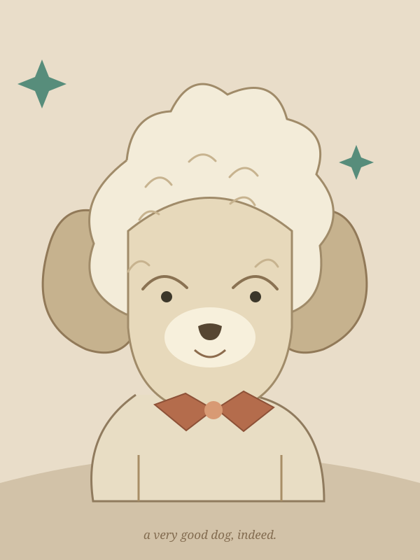

Comfort first
Read body language, allow pauses and discuss a suitable handling plan.
BOUTIQUE DOG GROOMING · BRISTOL
A little slower. A little more personal.
Thoughtful grooming in a one-dog-at-a-time
studio, with comfort at the heart of it all.
A LITTLE TIME, JUST FOR THEM
Choose a sample visit preference.No live availability or slot reservation.
Make a local enquiry →
THE GROOMING MENU
Four thoughtful packages.
One-on-one attention, always.
Illustrative starting fees and durations. Coat condition, handling needs and size require individual assessment and a confirmed quote. Cosmetic brushing and facials are not veterinary treatment.
THE PAWHOUSE PHILOSOPHY
Read body language, allow pauses and discuss a suitable handling plan.
A quiet studio concept with your dog as the centre of attention.
Ask about ingredients and sensitivities before choosing coat products.
A useful, comfortable style matters more than a one-size-fits-all finish.
THE PEOPLE BEHIND THE APRONS
A concept groomer persona for curly-coat care and comfortable everyday styles.
A concept groomer persona for patient introductions and thoughtful handling.
A concept groomer persona for big coats and a practical home-care routine.
Fictional studio team. Training, certification and professional memberships are not verified or asserted.
THE STUDIO SKETCHBOOK
Six original coat illustrations. These are not client photographs or grooming results.
FROM ONE DOG PERSON TO ANOTHER
Talk about what makes your dog comfortable and how breaks are handled.
Bring ideas, then discuss a realistic style based on condition and daily care.
A clear home-brushing routine can be as useful as a beautiful finish.
Illustrative conversation prompts, not customer testimonials.
A FEW THINGS TO KNOW
The Tidy is designed for small breeds. The Puppy First is for dogs under 12 months. A groomer confirms suitability, coat needs and fees.
Discuss behaviour and triggers in advance. A meet-and-greet or different care arrangement may be appropriate; no outcome is guaranteed.
Comfort takes priority. An individual assessment may lead to a shorter style or referral to a suitable professional.
No. This website is a static studio concept. Preferences are for exploring the enquiry process only.
A LITTLE TIME FOR YOUR BEST FRIEND
Build a sample care note.
We keep this one between you and your browser.
Illustrative pricing and duration.
Nothing sent, saved or reserved. Use fictional details.